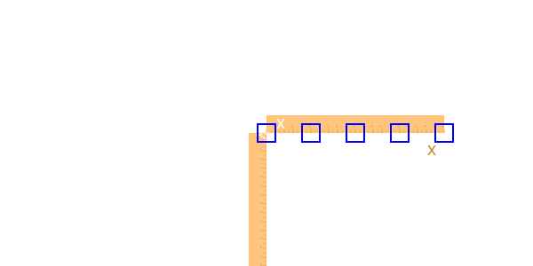
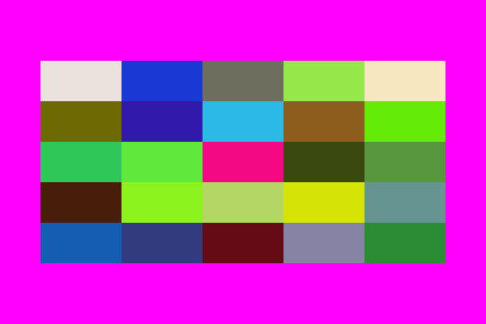
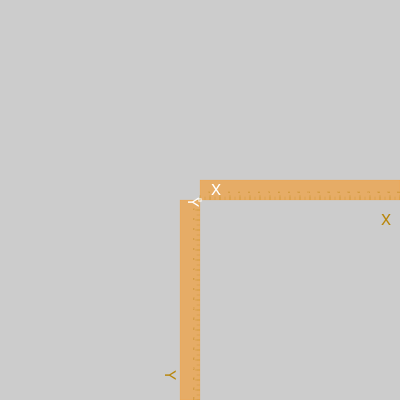

The basics
The underlying drawing model is that you make shapes, and add points to paths, and these are filled and/or stroked, using the current graphics state, which specifies colors, line thicknesses, and opacity. You can modify the current graphics state by transforming/rotating/scaling it, and setting style parameters, and so on. Subsequent graphics use the new state, but the graphics you've already drawn are unchanged.
You can specify points on the drawing surface using Point(x, y). The default origin is at the top left of the drawing area, but you can reposition it at any time. Many of the drawing functions have an action argument. This can be :none, :fill, :stroke, :fillstroke, :fillpreserve, :strokepreserve, :clip, or :path. The default is :none.
Y coordinates increase downwards, so Point(0, 100) is below Point(0, 0). This is the preferred coordinate system for computer graphics software, but mathematicians and scientists may well be used to the y-axis increasing upwards...
The main types you'll encounter in Luxor are:
| Name of type | Purpose |
|---|---|
| Drawing | holds the current drawing |
| Point | specifies 2D points |
| BoundingBox | defines a bounding box |
| Table | defines a table with different column widths and row heights |
| Partition | defines a table defined by cell width and height |
| Tiler | defines a rectangular grid of tiles |
| BezierPathSegment | a Bezier path segment defined by 4 points |
| BezierPath | contains a series of BezierPathSegments |
| GridRect | defines a rectangular grid |
| GridHex | defines a hexagonal grid |
| Scene | used to define a scene for an animation |
| Turtle | represents a turtle for drawing turtle graphics |
Points and coordinates
The Point type holds two coordinates, x and y. For example:
julia> P = Point(12.0, 13.0)
Luxor.Point(12.0, 13.0)
julia> P.x
12.0
julia> P.y
13.0Points are immutable, so you can't change P's x or y values directly. But it's easy to make new points based on existing ones.
Points can be added together:
julia> Q = Point(4, 5)
Luxor.Point(4.0, 5.0)
julia> P + Q
Luxor.Point(16.0, 18.0)You can add or multiply Points and scalars:
julia> 10P
Luxor.Point(120.0, 130.0)
julia> P + 100
Luxor.Point(112.0, 113.0)You can also make new points by mixing Points and tuples:
julia> P + (10, 0)
Luxor.Point(22.0, 13.0)
julia> Q * (0.5, 0.5)
Luxor.Point(2.0, 2.5)You can also create points from tuples:
julia> Point((1.0, 14))
Point(1.0, 14.0)
julia> plist = (1.0, 2.0), (-10, 10), (14.2, 15.4));
julia> Point.(plist)
3-element Array{Point,1}:
Point(1.0, 2.0)
Point(-10.0, 10.0)
Point(14.2, 15.4)You can use the letter O as a shortcut to refer to the current Origin, Point(0, 0).
rulers()
box.([O + (i, 0) for i in range(0, stop=200, length=5)], 20, 20, :stroke)
Angles are usually supplied in radians, measured starting at the positive x-axis turning towards the positive y-axis (which usually points 'down' the page or canvas, so 'clockwise'). (The main exception is for turtle graphics, which conventionally let you supply angles in degrees.)
Coordinates are interpreted as PostScript points, where a point is 1/72 of an inch.
Because Julia allows you to combine numbers and variables directly, you can supply units with dimensions and have them converted to points (assuming the current scale is 1:1):
- inch (
inis unavailable, being used byforsyntax) - cm (centimeters)
- mm (millimeters)
For example:
rect(Point(20mm, 2cm), 5inch, (22/7)inch, :fill)Drawings
Drawings and files
To create a drawing, and optionally specify the filename, type, and dimensions, use the Drawing constructor function.
Luxor.Drawing — TypeCreate a new drawing, and optionally specify file type (PNG, PDF, SVG, EPS), file-based or in-memory, and dimensions.
Drawing(width=600, height=600, file="luxor-drawing.png")Extended help
Drawing()creates a drawing, defaulting to PNG format, default filename "luxor-drawing.png", default size 800 pixels square.
You can specify dimensions, and assume the default output filename:
Drawing(400, 300)creates a drawing 400 pixels wide by 300 pixels high, defaulting to PNG format, default filename "luxor-drawing.png".
Drawing(400, 300, "my-drawing.pdf")creates a PDF drawing in the file "my-drawing.pdf", 400 by 300 pixels.
Drawing(1200, 800, "my-drawing.svg")creates an SVG drawing in the file "my-drawing.svg", 1200 by 800 pixels.
Drawing(width, height, surfacetype | filename)creates a new drawing of the given surface type (e.g. :svg, :png), storing the picture only in memory if no filename is provided.
Drawing(1200, 1200/Base.Mathconstants.golden, "my-drawing.eps")creates an EPS drawing in the file "my-drawing.eps", 1200 wide by 741.8 pixels (= 1200 ÷ ϕ) high. Only for PNG files must the dimensions be integers.
Drawing("A4", "my-drawing.pdf")creates a drawing in ISO A4 size (595 wide by 842 high) in the file "my-drawing.pdf". Other sizes available are: "A0", "A1", "A2", "A3", "A4", "A5", "A6", "Letter", "Legal", "A", "B", "C", "D", "E". Append "landscape" to get the landscape version.
Drawing("A4landscape")creates the drawing A4 landscape size.
PDF files default to a white background, but PNG defaults to transparent, unless you specify one using background().
Drawing(width, height, :image)creates the drawing in an image buffer in memory. You can obtain the data as a matrix with image_as_matrix().
Luxor.paper_sizes — Constantpaper_sizesThe paper_sizes Dictionary holds a few paper sizes, width is first, so default is Portrait:
"A0" => (2384, 3370),
"A1" => (1684, 2384),
"A2" => (1191, 1684),
"A3" => (842, 1191),
"A4" => (595, 842),
"A5" => (420, 595),
"A6" => (298, 420),
"A" => (612, 792),
"Letter" => (612, 792),
"Legal" => (612, 1008),
"Ledger" => (792, 1224),
"B" => (612, 1008),
"C" => (1584, 1224),
"D" => (2448, 1584),
"E" => (3168, 2448))To finish a drawing and close the file, use finish(), and, to launch an external application to view it, use preview().
If you're using a notebook environment, such as Jupyter (IJulia) or Pluto, preview() tries to display PNG and SVG files in the next notebook cell.

If you're using Juno or VS Code, then PNG and SVG files should appear in the Plots pane.

Luxor.finish — Functionfinish()Finish the drawing, and close the file. You may be able to open it in an external viewer application with preview().
Luxor.preview — Functionpreview()If working in a notebook (eg Jupyter/IJulia), display a PNG or SVG file in the notebook.
If working in Juno, display a PNG or SVG file in the Plot pane.
Drawings of type :image should be converted to a matrix with image_as_matrix() before calling finish().
Otherwise:
- on macOS, open the file in the default application, which is probably the Preview.app for PNG and PDF, and Safari for SVG
- on Unix, open the file with
xdg-open - on Windows, refer to
COMSPEC.
SVGs are text based, and can get quite big. Up to a certain size, SVGs will be previewable as easily and quickly as PNGs. But very large drawings in SVG format won't necessarily be displayed.
Quick drawings with macros
The @draw, @svg, @png, and @pdf macros are designed to let you quickly create graphics without having to provide the usual boiler-plate functions. For example, the Julia code:
@svg circle(Point(0, 0), 20, :stroke) 50 50expands to
Drawing(50, 50, "luxor-drawing-(timestamp).svg")
origin()
background("white")
sethue("black")
circle(Point(0, 0), 20, :stroke)
finish()
preview()They're short-cuts - designed to save typing. You can omit the width and height (defaulting to 600 by 600, except for @imagematrix), and you don't have to specify a filename (you'll get time-stamped files in the current working directory). For multiple lines, use either:
@svg begin
setline(10)
sethue("purple")
circle(Point(0, 0), 20, :fill)
endor (less nicely):
@svg (setline(10);
sethue("purple");
circle(Point(0, 0), 20, :fill)
)The @draw macro creates an in-memory drawing. You should see it displayed if you're working in a capable environment (Juno, VSCode, Jupyter, Pluto).
Luxor.@svg — Macro@svg drawing-instructions [width] [height] [filename]Create and preview an SVG drawing, optionally specifying width and height (the default is 600 by 600). The file is saved in the current working directory as filename if supplied, or luxor-drawing-(timestamp).svg.
Examples
@svg circle(O, 20, :fill)
@svg circle(O, 20, :fill) 400
@svg circle(O, 20, :fill) 400 1200
@svg circle(O, 20, :fill) 400 1200 "/tmp/test"
@svg circle(O, 20, :fill) 400 1200 "/tmp/test.svg"
@svg begin
setline(10)
sethue("purple")
circle(O, 20, :fill)
end
@svg begin
setline(10)
sethue("purple")
circle(O, 20, :fill)
end 1200 1200Luxor.@png — Macro@png drawing-instructions [width] [height] [filename]Create and preview an PNG drawing, optionally specifying width and height (the default is 600 by 600). The file is saved in the current working directory as filename, if supplied, or luxor-drawing(timestamp).png.
Examples
@png circle(O, 20, :fill)
@png circle(O, 20, :fill) 400
@png circle(O, 20, :fill) 400 1200
@png circle(O, 20, :fill) 400 1200 "/tmp/round"
@png circle(O, 20, :fill) 400 1200 "/tmp/round.png"
@png begin
setline(10)
sethue("purple")
circle(O, 20, :fill)
end
@png begin
setline(10)
sethue("purple")
circle(O, 20, :fill)
end 1200 1200Luxor.@pdf — Macro@pdf drawing-instructions [width] [height] [filename]Create and preview an PDF drawing, optionally specifying width and height (the default is 600 by 600). The file is saved in the current working directory as filename if supplied, or luxor-drawing(timestamp).pdf.
Examples
@pdf circle(O, 20, :fill)
@pdf circle(O, 20, :fill) 400
@pdf circle(O, 20, :fill) 400 1200
@pdf circle(O, 20, :fill) 400 1200 "/tmp/A0-version"
@pdf circle(O, 20, :fill) 400 1200 "/tmp/A0-version.pdf"
@pdf begin
setline(10)
sethue("purple")
circle(O, 20, :fill)
end
@pdf begin
setline(10)
sethue("purple")
circle(O, 20, :fill)
end 1200 1200Luxor.@draw — Macro@draw drawing-instructions [width] [height]Preview an PNG drawing, optionally specifying width and height (the default is 600 by 600). The drawing is stored in memory, not in a file on disk.
Examples
@draw circle(O, 20, :fill)
@draw circle(O, 20, :fill) 400
@draw circle(O, 20, :fill) 400 1200
@draw begin
setline(10)
sethue("purple")
circle(O, 20, :fill)
end
@draw begin
setline(10)
sethue("purple")
circle(O, 20, :fill)
end 1200 1200If you don't specify a size, the defaults are 600 by 600. If you don't specify a file name, files created with the macros are placed in your current working directory as luxor-drawing- followed by a time stamp. You don't have to specify the suffix:
@svg juliacircles(150) 400 400 "test" # saves in "test.svg"If you want to create drawings with transparent backgrounds, or located other than in the center, use the longer form rather than the macros:
Drawing()
background(1, 1, 1, 0)
origin()
setline(30)
sethue("green") # assumes current opacity
box(BoundingBox() - 50, :stroke)
finish()
preview()
Drawings in memory
You can choose to store the drawing in memory. The advantage is that in-memory drawings are quicker, and can be passed as Julia data. It's useful in some environments to not have to worry about writing files. This syntax for the Drawing() function:
Drawing(width, height, surfacetype, [filename])lets you supply surfacetype as a symbol (:svg or :png). This creates a new drawing of the given surface type and stores the image only in memory if no filename is supplied. The @draw macro creates PNG files in memory.
You can specify :image as the surface type. This allows you to copy the current drawing into a 2D matrix (using image_as_matrix()). See the Images chapter for more information.
Interactive graphics with IJulia and Interact
Currently, you should use an in-memory SVG drawing to display graphics if you're using Interact.jl. This example provides an HSB color widget.
using Interact, Colors, Luxor
@manipulate for h in 0:360, s in 0:0.01:1, b in 0:0.01:1
d = Drawing(300, 300, :svg)
sethue(Colors.HSB(h, s, b))
origin()
circle(Point(0, 0), 100, :fill)
circle(polar(110, deg2rad(h)), 10, :fill)
sethue("black")
label(string(h, "°"), deg2rad(h), polar(120, deg2rad(h)))
finish()
d
end
The drawing surface
The origin (0/0) starts off at the top left: the x axis runs left to right across the page, and the y axis runs top to bottom down the page.
The origin() function moves the 0/0 point to the center of the drawing. It's often convenient to do this at the beginning of a program.
You can use functions like scale(), rotate(), and translate() to change the coordinate system.
background() fills the drawing with a color, covering any previous contents. By default, PDF drawings have a white background, whereas PNG drawings have no background so that the background appears transparent in other applications. If there is a current clipping region, background() fills just that region. In the next example, the first background() fills the entire drawing with magenta, but the calls in the loop fill only the active clipping region, a table cell defined by the Table iterator:
background("magenta")
origin()
table = Table(5, 5, 100, 50)
for (pos, n) in table
box(pos,
table.colwidths[table.currentcol],
table.rowheights[table.currentrow],
:clip)
background(randomhue()...)
clipreset()
end
The rulers() function draws a couple of rulers to indicate the position and orientation of the current axes.
background("gray80")
origin()
rulers()
Luxor.background — Functionbackground(color)Fill the canvas with a single color. Returns the (red, green, blue, alpha) values.
Examples:
background("antiquewhite")
background(1, 0.0, 1.0)
background(1, 0.0, 1.0, .5)If Colors.jl is installed:
background(RGB(0, 1, 0))
background(RGBA(0, 1, 0))
background(RGBA(0, 1, 0, .5))
background(Luv(20, -20, 30))If you don't specify a background color for a PNG drawing, the background will be transparent. You can set a partly or completely transparent background for PNG files by passing a color with an alpha value, such as this 'transparent black':
background(RGBA(0, 0, 0, 0))or
background(0, 0, 0, 0)Returns a tuple (r, g, b, a) of the color that was used to paint the background.
Luxor.rulers — Functionrulers()Draw and label two rulers starting at O, the current 0/0, and continuing out along the current positive x and y axes.
Luxor.origin — Functionorigin()Reset the current matrix, and then set the 0/0 origin to the center of the drawing (otherwise it will stay at the top left corner, the default).
You can refer to the 0/0 point as O. (O = Point(0, 0)),
origin(pt:Point)Reset the current matrix, then move the 0/0 position to pt.
Save and restore
gsave() saves a copy of the current graphics settings (current axis rotation, position, scale, line and text settings, color, and so on). When the next grestore() is called, all changes you've made to the graphics settings will be discarded, and the previous settings are restored, so things return to how they were when you last used gsave(). gsave() and grestore() should always be balanced in pairs.
The @layer macro is a synonym for a gsave()...grestore() pair.
@svg begin
circle(Point(0, 0), 100, :stroke)
@layer (sethue("red"); rule(Point(0, 0)); rule(O, π/2))
circle(Point(0, 0), 200, :stroke)
endor
@svg begin
circle(Point(0, 0), 100, :stroke)
@layer begin
sethue("red")
rule(Point(0, 0))
rule(Point(0, 0), pi/2)
end
circle(Point(0, 0), 200, :stroke)
endLuxor.gsave — Functiongsave()Save the current color settings on the stack.
Luxor.grestore — Functiongrestore()Replace the current graphics state with the one on top of the stack.
Return the current drawing
In some situations you'll want to explicitly return the current drawing to the calling function.
Luxor.currentdrawing — Functioncurrentdrawing()Return the current Luxor drawing, if there currently is one.
Drawing as image matrix
While drawing, you can copy the data in the form of a matrix, using the image_as_matrix() function.
image_as_matrix() returns a array of ARGB32 values that encode the Red, Green, Blue, and Alpha values of each pixel.
The following example draws a red rectangle, then copies the drawing into a matrix called mat1. Then it adds a blue triangle, and copies the updated drawing into mat2. Then, the second drawing reads the values in from the two matrices and draws some square tiles depending on the corresponding values in the two matrices ... a very primitive Boolean operation.
Drawing(40, 40, :png)
origin()
background("black")
sethue("red")
box(Point(0, 0), 40, 15, :fill)
mat1 = image_as_matrix()
sethue("blue")
setline(10)
setopacity(0.6)
ngon(Point(0, 0), 10, 3, 0, :stroke)
mat2 = image_as_matrix()
finish()
# second drawing
Drawing(400, 400, "assets/figures/image-drawings.svg")
background("grey20")
origin()
t = Table(40, 40, 4, 4)
sethue("white")
rc = CartesianIndices(mat1)
for i in rc
r, c = Tuple(i)
pixel1 = convert(Colors.RGBA, mat1[r, c])
pixel2 = convert(Colors.RGBA, mat2[r, c])
if red(pixel1) > .5 && blue(pixel2) > .5
randomhue()
box(t, r, c, :fillstroke)
end
end

(You can use collect() to gather the re-interpreted values together.)
If you're working with Images.jl, you will probably want to transpose the array:
using Luxor, Images
# in Luxor
Drawing(50, 50, :png)
origin()
background(randomhue()...)
sethue("white")
fontsize(40)
fontface("Georgia")
text("42", halign=:center, valign=:middle)
mat = image_as_matrix();
finish()
# in Images
img = Gray.(mat)
display(imresize(img, 150, 150))Luxor.@imagematrix — Macro@imagematrix(body, width=256, height=256)Create a drawing and return a matrix of the image.
This macro returns a matrix of pixels that represent the drawing produced by the vector graphics instructions. It uses the image_as_matrix() function.
The default drawing is 256 by 256 points.
You don't need finish() (the macro calls it), and it's not previewed by preview().
m = @imagematrix begin
sethue("red")
box(O, 20, 20, :fill)
end 60 60
julia> m[1220:1224] |> show
ARGB32[ARGB32(0.0N0f8,0.0N0f8,0.0N0f8,0.0N0f8),
ARGB32(1.0N0f8,0.0N0f8,0.0N0f8,1.0N0f8),
ARGB32(1.0N0f8,0.0N0f8,0.0N0f8,1.0N0f8),
ARGB32(1.0N0f8,0.0N0f8,0.0N0f8,1.0N0f8),
ARGB32(1.0N0f8,0.0N0f8,0.0N0f8,1.0N0f8)]
If, for some strange reason you want to draw the matrix as another Luxor drawing again, use code such as this:
m = @imagematrix begin
sethue("red")
box(O, 20, 20, :fill)
sethue("blue")
box(O, 10, 40, :fill)
end 60 60
function convertmatrixtocolors(m)
return convert.(Colors.RGBA, m)
end
function drawimagematrix(m)
d = Drawing(500, 500, "/tmp/temp.png")
origin()
w, h = size(m)
t = Tiler(500, 500, w, h)
mi = convertmatrixtocolors(m)
@show mi[30, 30]
for (pos, n) in t
c = mi[t.currentrow, t.currentcol]
setcolor(c)
box(pos, t.tilewidth -1, t.tileheight - 1, :fill)
end
finish()
return d
end
drawimagematrix(m)Transparency
The default value for the cells in an image matrix is transparent black. (Luxor's default color is opaque black.)
julia> @imagematrix begin
end 2 2
2×2 reinterpret(ARGB32, ::Array{UInt32,2}):
ARGB32(0.0,0.0,0.0,0.0) ARGB32(0.0,0.0,0.0,0.0)
ARGB32(0.0,0.0,0.0,0.0) ARGB32(0.0,0.0,0.0,0.0)Setting the background to a partially or completely transparent value may give unexpected results:
julia> @imagematrix begin
background(1, 0.5, 0.0, 0.5) # semi-transparent orange
end 2 2
2×2 reinterpret(ARGB32, ::Array{UInt32,2}):
ARGB32(0.502,0.251,0.0,0.502) ARGB32(0.502,0.251,0.0,0.502)
ARGB32(0.502,0.251,0.0,0.502) ARGB32(0.502,0.251,0.0,0.502)here the semi-transparent orange color has been partially applied to the transparent background.
julia> @imagematrix begin
sethue(1., 0.5, 0.0)
paint()
end 2 2
2×2 reinterpret(ARGB32, ::Array{UInt32,2}):
ARGB32(1.0,0.502,0.0,1.0) ARGB32(1.0,0.502,0.0,1.0)
ARGB32(1.0,0.502,0.0,1.0) ARGB32(1.0,0.502,0.0,1.0)picks up the default alpha of 1.0.
Luxor.@imagematrix! — Macro@imagematrix!(buffer, body, width=256, height=256)Like @imagematrix, but use an existing UInt32 buffer.
w = 200
h = 150
buffer = zeros(UInt32, w, h)
m = @imagematrix! buffer juliacircles(40) 200 150;
Images.RGB.(m)Luxor.image_as_matrix — Functionimage_as_matrix()Return an Array of the current state of the picture as an array of ARGB32.
A matrix 50 wide and 30 high => a table 30 rows by 50 cols
using Luxor, Images
Drawing(50, 50, :png)
origin()
background(randomhue()...)
sethue("white")
fontsize(40)
fontface("Georgia")
text("42", halign=:center, valign=:middle)
mat = image_as_matrix()
finish()Luxor.image_as_matrix! — Functionimage_as_matrix!(buffer)Like image_as_matrix(), but use an existing UInt32 buffer.
buffer is a buffer of UInt32.
w = 200
h = 150
buffer = zeros(UInt32, w, h)
Drawing(w, h, :image)
origin()
juliacircles(50)
m = image_as_matrix!(buffer)
finish()
# collect(m)) is Array{ARGB32,2}
Images.RGB.(m)